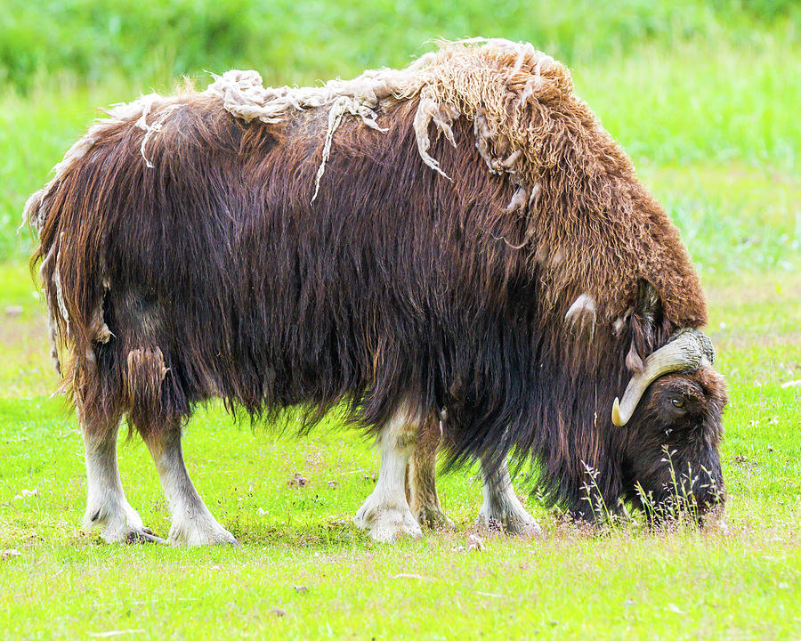

Main Musk Ox Page
Musk ox are excellent
The Musk Ox
Welcome to the World of the Mighty Musk Ox! 🌨️🐂

Deep in the heart of the Arctic tundra, where the winds howl and temperatures plummet, a shaggy titan roams—a creature that embodies resilience and ancient power. Meet the musk ox (Ovibos moschatus), a prehistoric marvel whose name evokes the primal spirit of Earth's coldest landscapes. These majestic animals are not just survivors; they are symbols of adaptability and endurance, with a touch of wild charisma.
A Living Relic from the Ice Age ❄️
Did you know musk oxen have been around since the Ice Age? These incredible creatures walked alongside mammoths and saber-toothed cats, witnessing epochs of dramatic climate changes. Their thick, woolly coats—called qiviut—are eight times warmer than sheep’s wool, making them the ultimate winter warriors. Musk oxen are living time capsules, reminders of Earth's frozen past.Built for the Arctic 🧊
Musk oxen thrive where few dare to tread, inhabiting some of the harshest environments on Earth. Their short, sturdy legs and stocky bodies allow them to plow through snowdrifts, while their broad hooves act like snowshoes, giving them unparalleled stability. And those intimidating curved horns? They’re not just for show—they’re tools for defense and symbols of dominance.
The Magic of Musk Ox Qiviut 🧶
Speaking of their coats, have you heard of qiviut? It’s one of the softest, warmest natural fibers on the planet. Musk oxen shed this luxurious undercoat each spring, and it’s carefully collected to create lightweight, breathable garments prized by Arctic communities and luxury knitters worldwide. Owning something made from qiviut is like wrapping yourself in a piece of the Arctic.What allows the Musk Ox to thirve?
- Fur
- Outer Guard Hairs
- Inner Qiviut
- Horns
- Stocky build
Social Butterflies with a Twist 🐾
Musk oxen are fiercely social, living in herds of 10 to 20 individuals that band together for warmth and safety. When predators like wolves or polar bears threaten, these majestic creatures form a protective circle, horns outward, with their young safely in the middle. Their teamwork and loyalty are a testament to the strength of community—even in the wildest of places.
Nature’s Bulldozers 🚜 With powerful necks and shoulders, musk oxen are nature's bulldozers, breaking through icy crusts to reach the grasses, lichens, and mosses hidden beneath. These plant-based meals sustain them during the long Arctic winters, proving that even in the most barren landscapes, life finds a way.
The Smell of Legacy 🌬️ Curious about their name? “Musk ox” comes from the musky odor produced by males during the rutting season—a cologne of sorts that’s irresistible to females. While this unique scent adds to their mystique, it’s their dramatic head-butting contests that truly steal the show. Male musk oxen collide in thunderous battles to establish dominance, their horned skulls designed to withstand incredible impacts.
Guardians of the Tundra 🌍 Musk oxen are not just cool animals—they’re vital to their ecosystems. As grazers, they help maintain plant diversity and cycle nutrients back into the soil, supporting the fragile Arctic ecosystem. Yet, like so many creatures, they face challenges from climate change and human activity, reminding us of our shared responsibility to protect these magnificent animals and their habitat.
Why Musk Oxen Matter to Us All ❤️ Whether it’s their prehistoric roots, their ingenious adaptations, or their sheer presence as Arctic icons, musk oxen captivate our imaginations and connect us to a wilder, more elemental world. They’re a living reminder of resilience, resourcefulness, and the enduring power of nature. So next time you bundle up against the cold, spare a thought for these woolly wonders who’ve mastered it—and maybe even draw a little inspiration from their unyielding spirit.
Ready to learn more? Dive deeper into the world of musk oxen and discover why these Arctic ambassadors are some of the coolest creatures on Earth!
Curious for more? Read more about this incredible animal here!
Return to top of page
See my other page